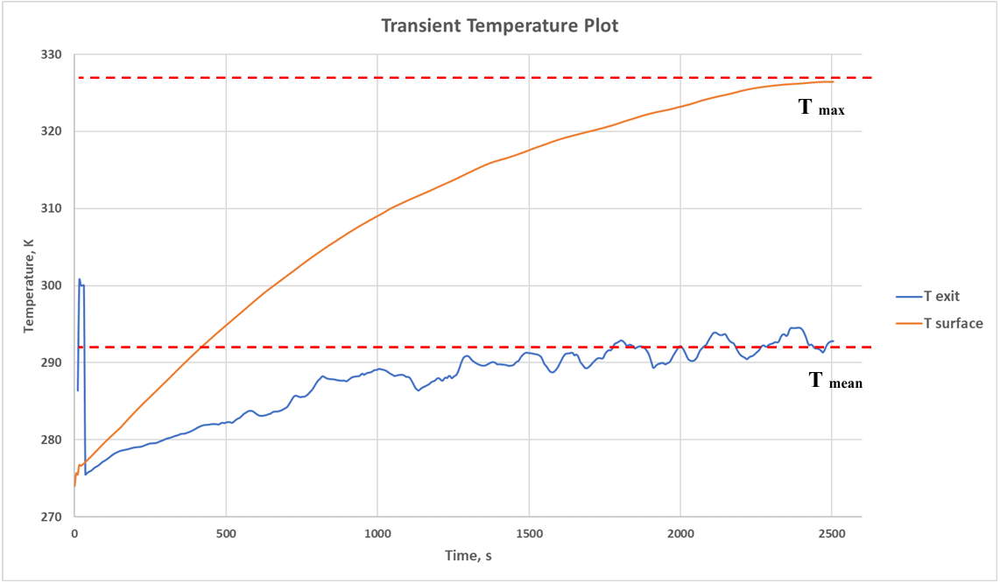
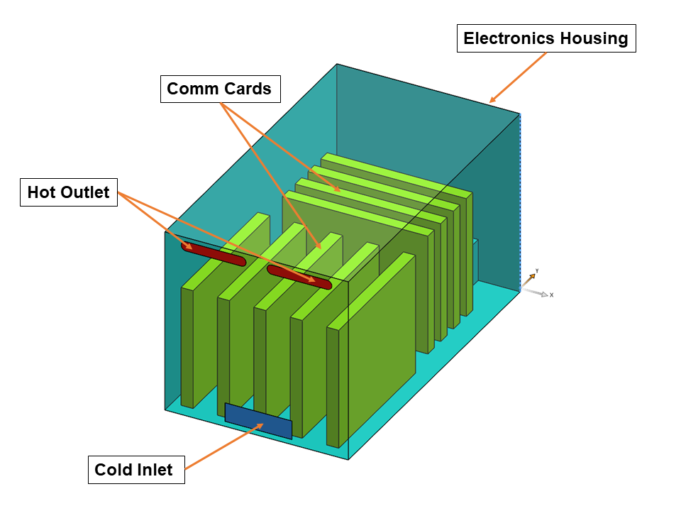
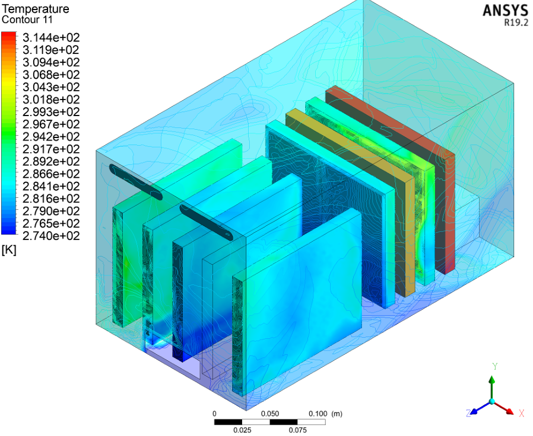
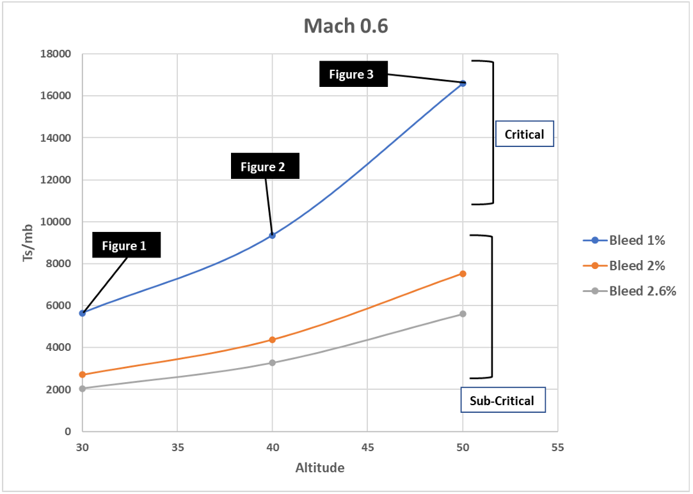
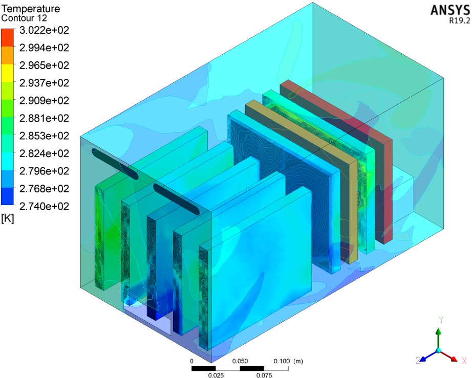
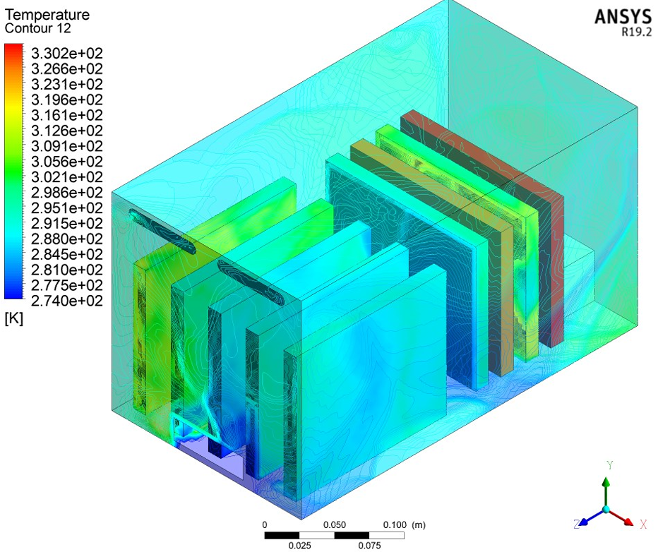
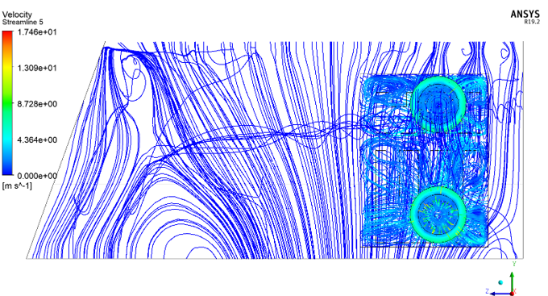

Standard
MIL-E-5400
Thermal management of high-flux electronics in a constrained, controlled section of a high-performance airborne platform, cooled by engine bleed air and qualified against MIL-E-5400.
Thermal management of high-flux electronics in a constrained airborne environment, installed on a high-performance airborne platform. The system sits in a closed section where multiple heat-transfer modes act at once: engine bleed air drives forced convection, while radiation exchanges heat between the electronics package surface and the outer aircraft enclosure surface.


Because the system sits in a closed section, 7th-stage bleed air from the aircraft engine is routed in to provide forced-convection cooling for the high-flux electronics package, modeled as a combined conjugate heat-transfer problem across the enclosure.
CFD was run at the operating extremes: maximum temperature reached 302 K, 314 K and 330 K at 30,000, 40,000 and 50,000 ft respectively, rising with altitude. The transient plot shows the surface reaching thermal equilibrium at 50,000 ft after 2,500 s (41.6 min) of continuous operation. The analysis confirmed full MIL-E-5400 compliance for the electronics cooling system under extreme operational loads, with the most critical condition identified as slow-speed, high-altitude flight at 1% engine bleed.





A controlled-bay thermal model qualified to MIL-E-5400 across the full altitude envelope, sponsored by SPRC, Government of Pakistan (Grant# C02SDM5N-00SAT-0TSO1234-220605), with the critical operating point identified and used to set design margins.